IntelliJ WTFS
Authors: Brandon Lee, Omar Khan
This document is intended to help you through frequently encountered weird technical failure scenarios (WTFS) in IntelliJ.
Mark Directories
Problem: There’s no green “Run” button next to the code I want to run.
Solution: First, check if you have coffee cup icons next to your Java files in the IntelliJ sidebar:
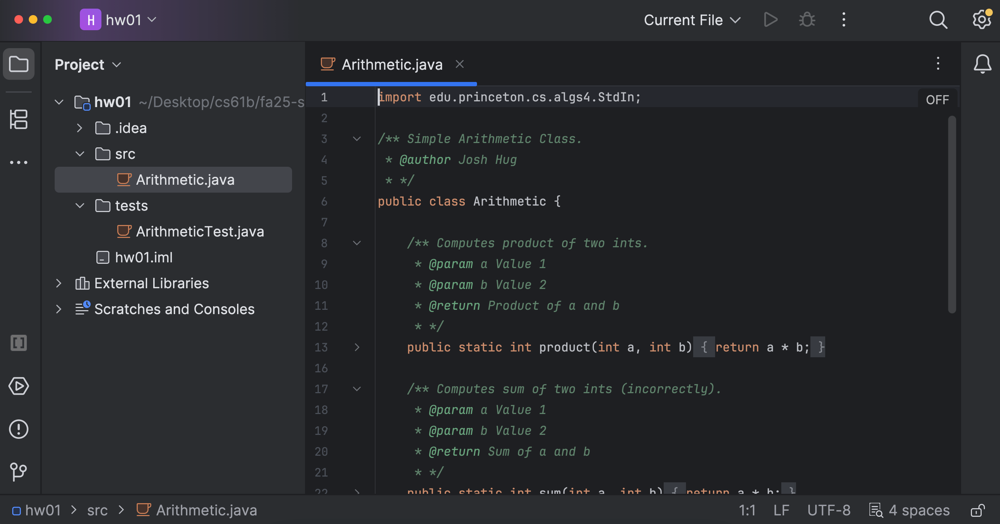
If you see those coffee cup icons, we need to tell IntelliJ where to find your Java files.
-
Right-click the
srcfolder → “Mark Directory as” → “Sources Root”: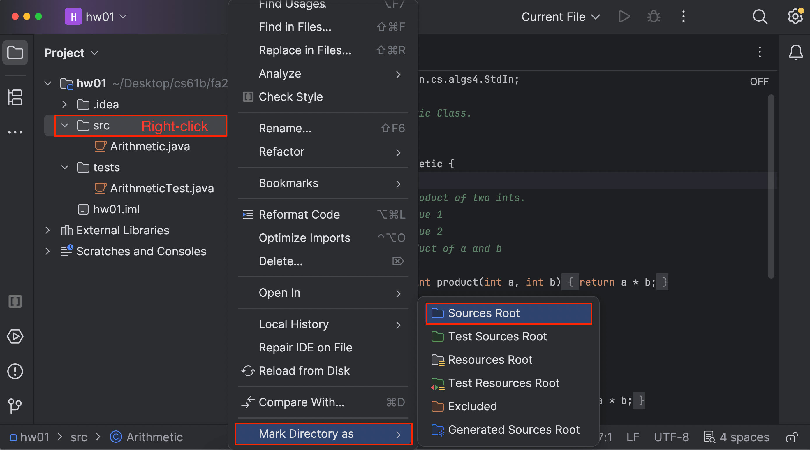
-
Then, right-click the
testsfolder → “Mark Directory as” → “Tests Root”: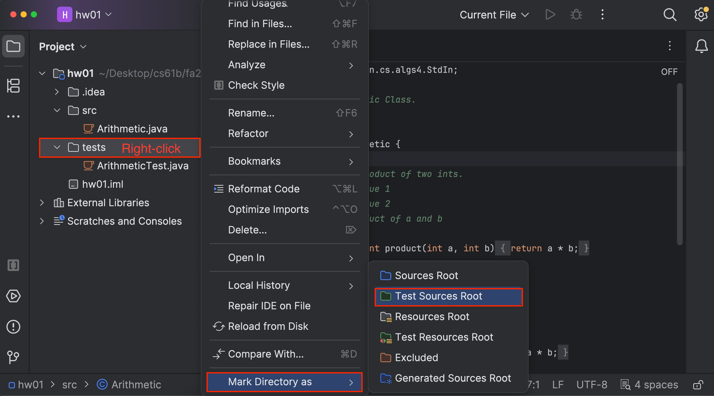
-
To check that everything worked, go to “File” → “Project Structure” → “Modules”:
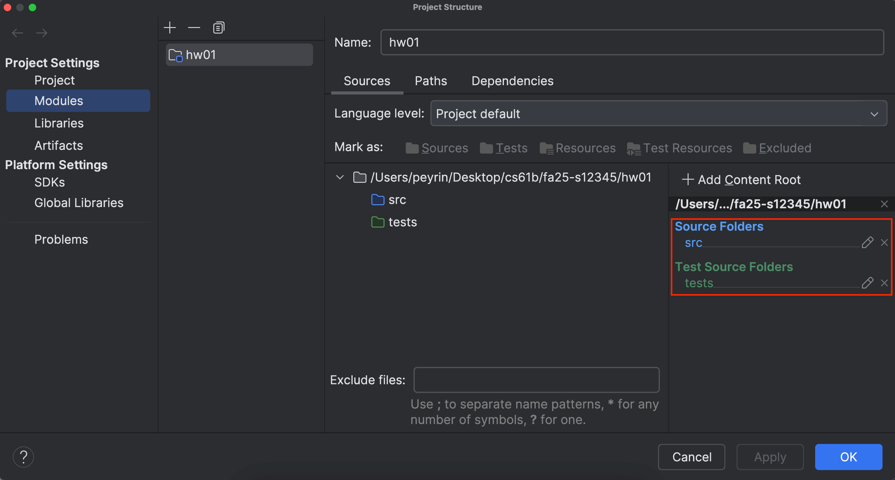
In the right sidebar, make sure that you see
srcunder “Source Folders”, and you seetestsunder “Test Source Folders.”If everything looks good, press “OK” to exit the Project Structure menu.
At this point, you should see a C icon next to your Java files, instead of the coffee cup icons. Also, the src folder should be blue, and the tests folder should be green:
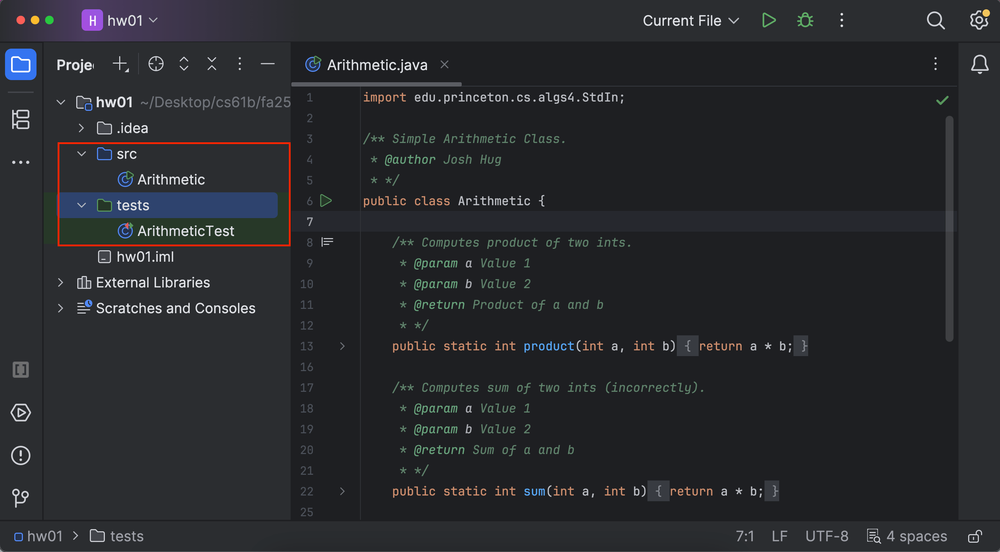
If all is fixed, you should be able to run your programs now!
If things aren’t fixed, try Reopen Intellij. If things still aren’t fixed after that, try the IntelliJ nuclear option.
Import Libraries
Problem: Function names are in red, and when I try to run code, Java says that a package does not exist.
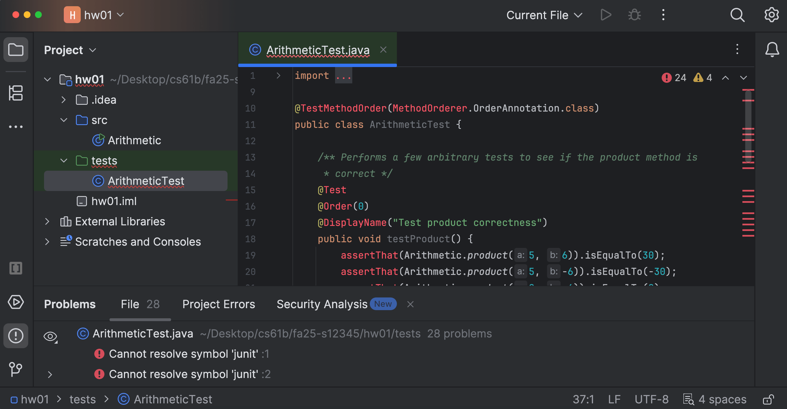
Solution: You need to import the libraries (library-fa25) for this project. Every time you start a new assignment (unfortunately, EVERY TIME) you must add the libraries again.
-
To add libraries, go to “File” → “Project Structures” → “Libraries.”
-
Click the plus sign.
-
Select the library folder (e.g.
library-fa25). -
After you finish importing libraries, you should see this:
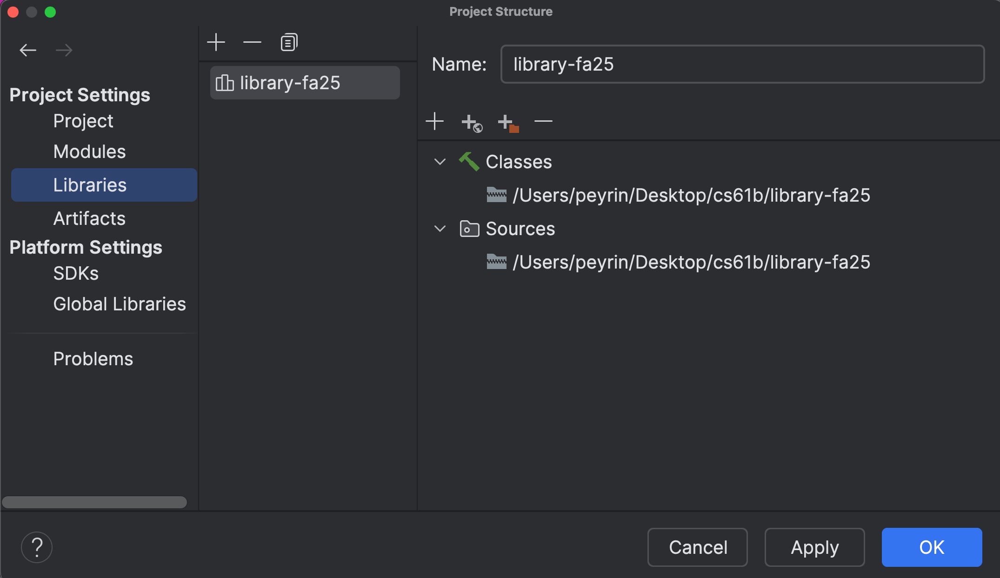
Press “OK” to apply changes and exit the menu.
At this point, if all is fixed, the function names should no longer be red, and you should be able to run your programs now!
If things aren’t fixed, try Reopen Intellij. If things still aren’t fixed after that, try the IntelliJ nuclear option.
Set Output Path
Problem: You see an error message saying “The output path is not specified for module,” like this:
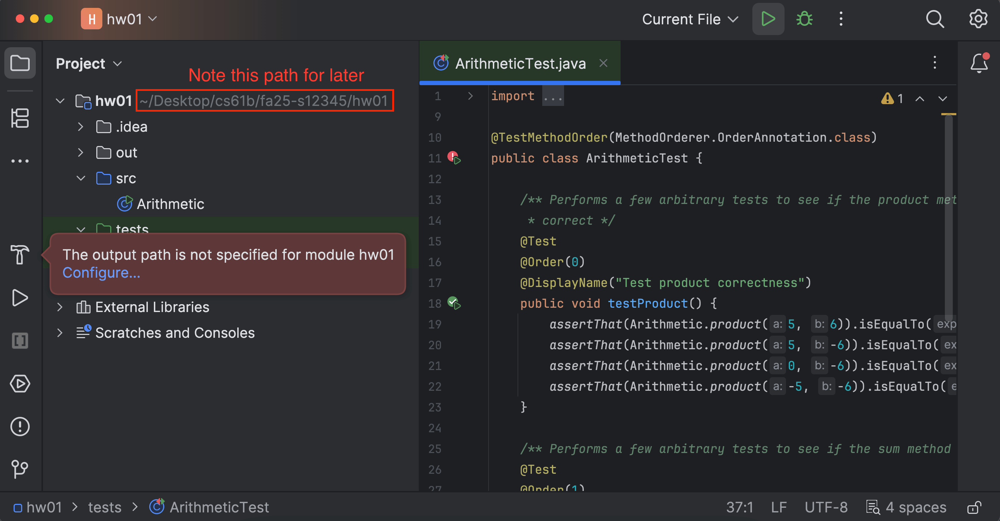
Solution: IntelliJ puts all the compiled Java .class files in a special folder called out. Usually, IntelliJ is able to determine where to put this folder, but sometimes it gets confused and needs your help.
-
You should see a filepath written in gray at the top of the left sidebar. In the picture above, the filepath is
~/Downloads/fa24-s12345/lab01. Make a note of this. -
Go to “File” → “Project Structures” → “Project.”
-
In the “Compiler output” box, write down the filepath from earlier, but with an extra
/outappended at the end. In this example, the output would be~/Desktop/cs61b/fa25-s12345/hw01/out.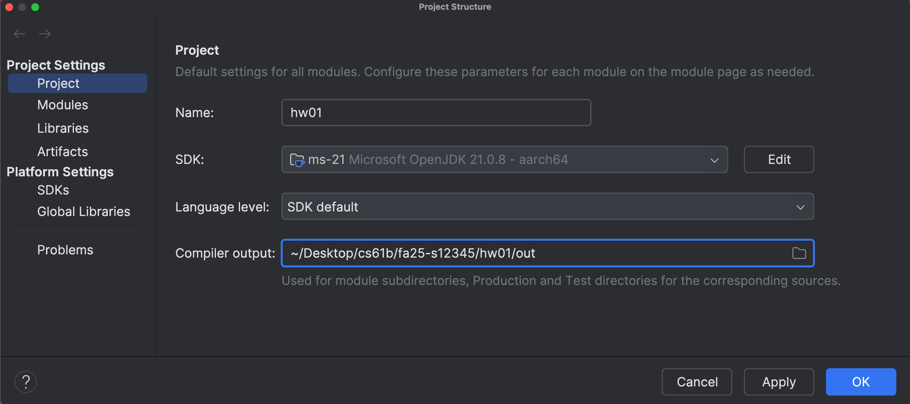
At this point, if all is fixed, the original “output path not specified” error message should no longer appear when you try to run your program.
If things aren’t fixed, try Reopen Intellij. If things still aren’t fixed after that, try the IntelliJ nuclear option.
Disable Git Plugin
Problem: You see a filename in red in the sidebar, like this:
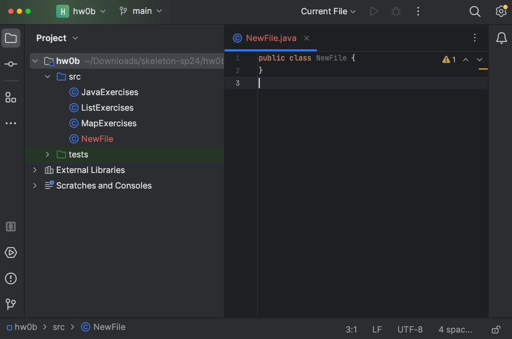
Or, you see a “Merging main” message in the top-left, like this:
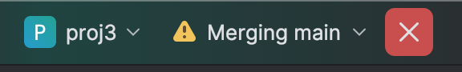
Solution: You can safely ignore these messages. These are from IntelliJ’s Git plugin, but in CS 61B, we don’t use this plugin. We only support using Git through the terminal.
If you would like to disable the Git plugin to avoid seeing these messages, you can go to “IntelliJ IDEA” → “Settings” (on MacOS), or “File” → “Settings” (on Windows and Linux).
In the left sidebar, select “Plugins,” and uncheck the bundled Git plugin:
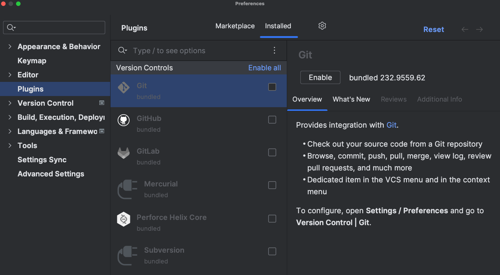
Then press “OK” to save your settings.
Rebuild Project
Sometimes, we just need to ask IntelliJ to recompile your code from scratch.
To rebuild your code from scratch: “Build” → “Rebuild Project”.
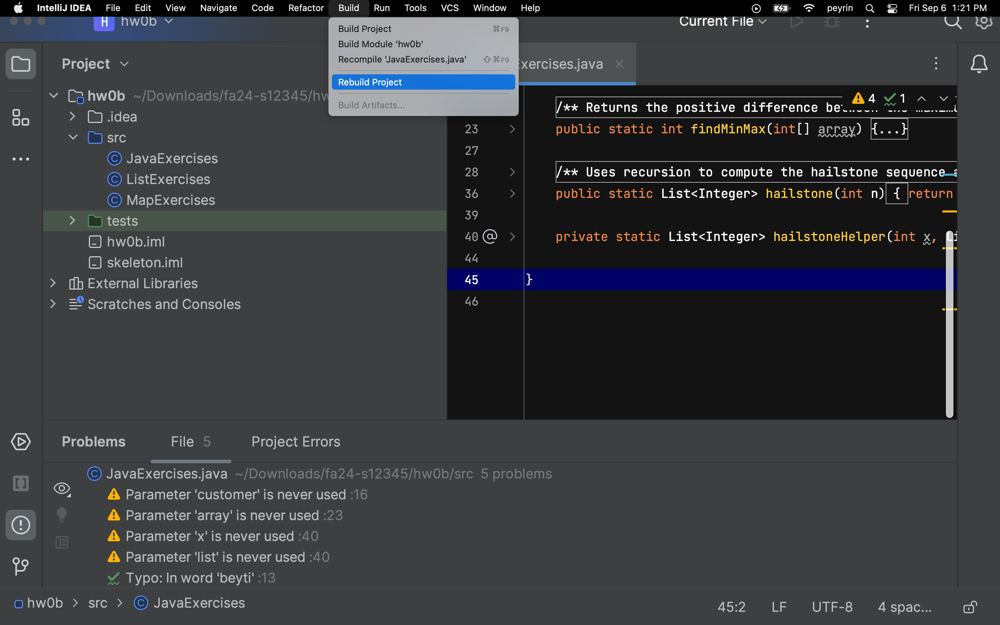
If things aren’t fixed, try Reopen Intellij. If things still aren’t fixed after that, try the IntelliJ nuclear option.
Reopen IntelliJ
Sometimes the easiest thing is to simply do it all over again. Even if you know you just did everything correctly, starting over very often just fixes the problem.
- Close the project: “File” → “Close Project”.
- Quit the IntelliJ application.
- Re-open the IntelliJ application.
- Click “Open” and select the correct folder (e.g.
lab01orproj0). - If things still aren’t fixed, try the IntelliJ nuclear option.
The IntelliJ Nuclear Option
Sometimes, the easiest thing is to simply do it ALL over again. Specifically, we need to purge Intellij’s memory and make it forget that our project ever existed.
Intellij stores project information as .idea folders and .iml files. To make it forget our project, we’ll be deleting those.
- Close the project: “File” → “Close Project.”
- Quit IntelliJ.
- In File Explorer / Finder, go to the project folder.
- Now, you’ll need to show hidden files, so that
.ideaand.imlshow up.- Guide for Windows 10 and below.
- Guide for Windows 11.
- Guide for Mac. Usually you just need to press Command + Shift + . (period).
- Delete the
.ideafolder and any.imlfiles you see. - Re-open the project in IntelliJ. You will need to follow Steps 1-6 of the Assignment Workflow Guide again.
At this point, the project should look normal. However, if things look wrong, you may need to redo Mark Directories, Import Libraries, and/or Set Output Path.